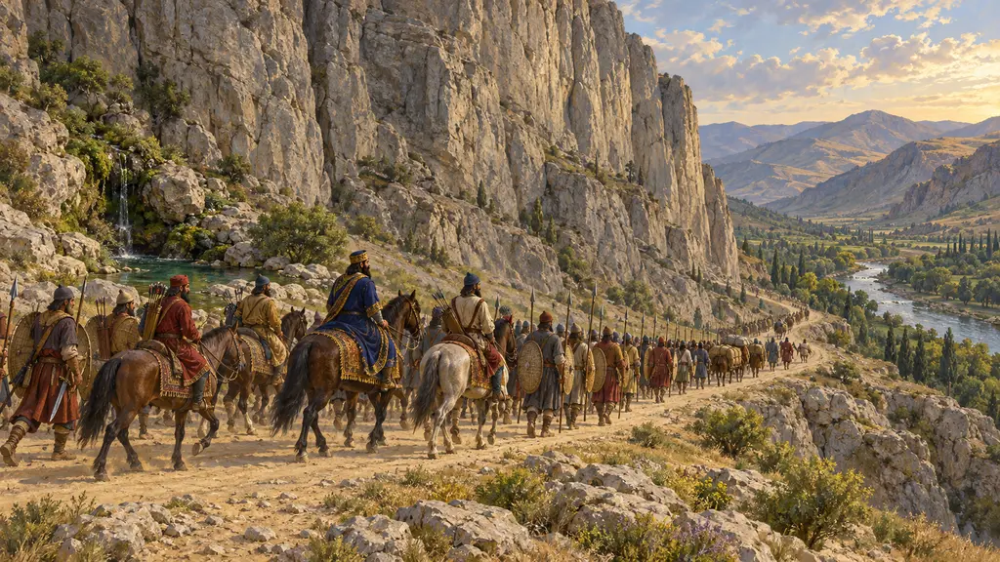
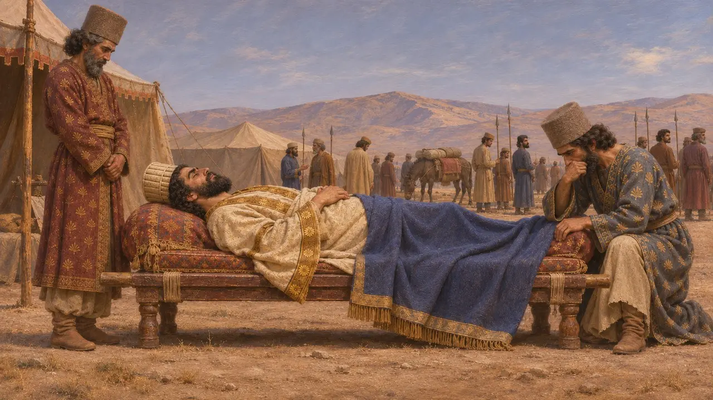
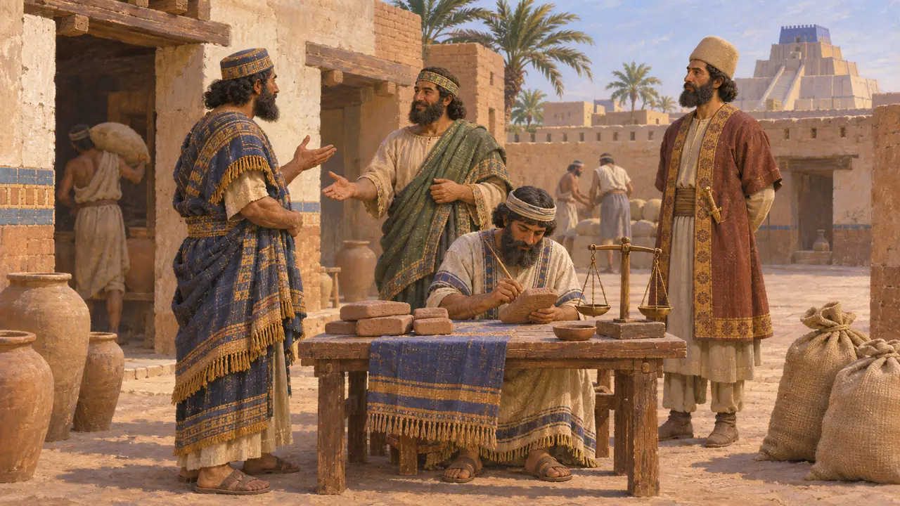
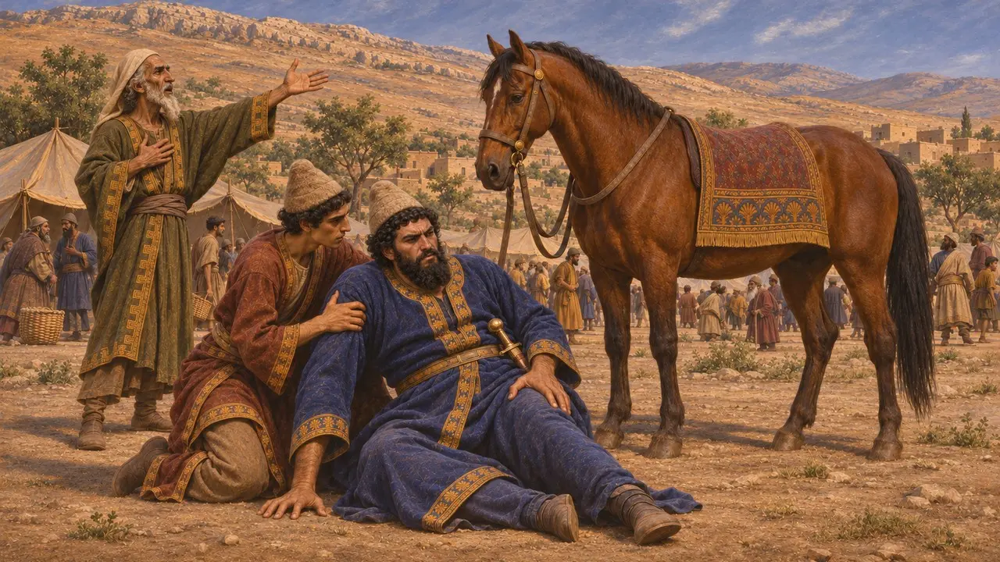
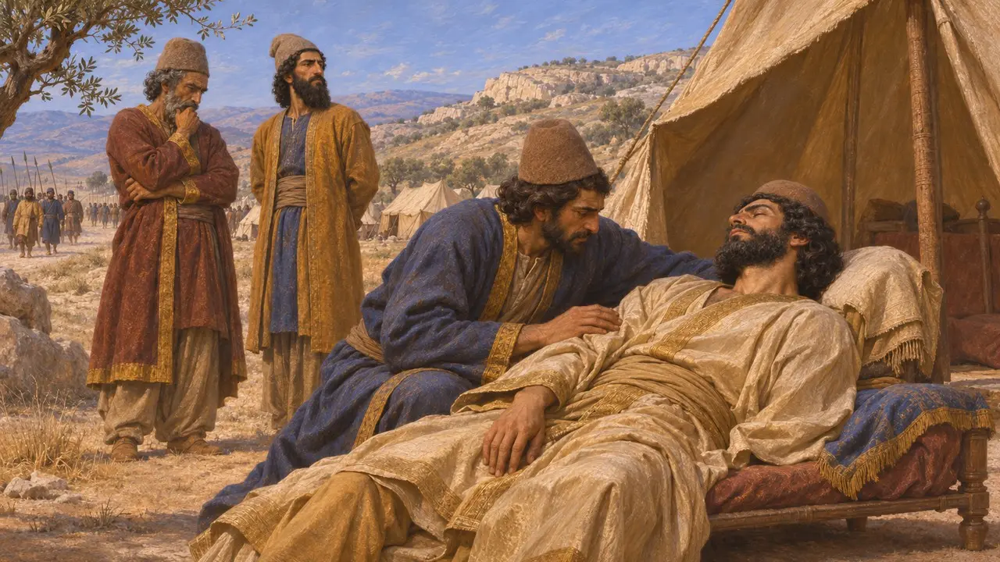
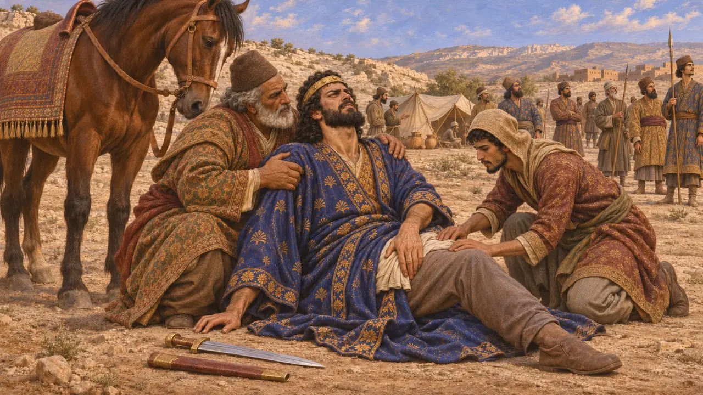

Enciclopedia › Battaglie ed eventi

La morte di Cambise
La morte del Re durante la marcia di ritorno dall'Egitto, 522 a.C.
Nel 522 Cambise, figlio di Ciro e conquistatore dell'Egitto, morì mentre marciava di ritorno verso la Persia. Un uomo che si faceva chiamare Bardiya, fratello del Re, era già stato riconosciuto come re in gran parte dell'impero. La sua morte lasciò vacante il trono e, nel giro di pochi mesi, Dario e sei nobili persiani uccisero il nuovo sovrano, dando inizio alle rivolte del 522-521.
Nel gioco: Il gioco segue la versione ufficiale di Dario, definendo il sovrano un uomo che si spacciava per Bardiya. Se fosse un impostore o il vero fratello è ancora oggetto di discussione, e la breve nota del gioco non stabilisce la causa della morte.

Che cosa dice l'iscrizione di Dario
Nelle fontiL'iscrizione di Behistun dice che Cambise aveva ucciso in segreto suo fratello Bardiya prima di partire per l'Egitto. Mentre il Re era lontano, un mago di nome Gaumata si sollevò in Perside nel marzo del 522, si proclamò Bardiya e prese il trono in luglio. Dario afferma poi soltanto che Cambise morì di morte propria. L'espressione non indica luogo, causa né data esatta.
DB §10-11

Un nuovo re nei documenti
Nelle fontiI testi commerciali babilonesi sono datati al regno di Bardiya a partire dalla primavera del 522. Ciò dimostra che egli fu accettato come re in Babilonide mentre Cambise era probabilmente ancora in vita. La morte di Cambise cadde quindi probabilmente nell'estate del 522 a.C., quando il nuovo sovrano aveva già ottenuto un ampio sostegno. I documenti non dicono come né dove Cambise sia morto.
A. Kuhrt, The Persian Empire, 2007

Erodoto e Ctesia sulla ferita
Racconto anticoErodoto racconta che Cambise si trovava in Siria, in un luogo chiamato Ecbatana, quando un araldo annunciò il nuovo re. Mentre balzava in sella, la spada gli scivolò dal fodero e gli trafisse la coscia. La ferita andò in cancrena ed egli morì dopo un regno di 7 anni e 5 mesi. Ctesia racconta un'altra storia: il Re morì a Babilonia, 11 giorni dopo essersi ferito la coscia con un coltello mentre intagliava il legno.
Herodotus 3.62-66; Ctesias, Persica (Photius's summary)

Incidente, suicidio o omicidio
ContesoGli storici non concordano su ciò che accadde. Alcuni leggono la frase di Dario come una morte naturale o accidentale, altri come un suicidio, e alcuni sospettano che Cambise sia stato ucciso da uomini che poi appoggiarono Dario. La questione è legata a una disputa più ampia sul fatto che l'uomo sul trono fosse davvero Bardiya. Se lo era, l'intero racconto di Dario servirebbe a giustificare la sua stessa presa del potere.
P. Briant, From Cyrus to Alexander, 2002

La ferita dell'Api
Leggenda posterioreErodoto presenta la morte come una punizione divina. Dice che la spada colpì lo stesso punto della coscia in cui Cambise aveva ferito il toro Api a Menfi. Aggiunge che un oracolo di Buto aveva avvertito il Re che sarebbe morto a Ecbatana, ed egli aveva creduto che si trattasse della città dei Medi. I documenti egizi relativi a un Api sepolto con onori regali sotto Cambise gettano dubbi sul racconto del toro pugnalato.
Herodotus 3.29, 3.64
Fonti
- DB §10-11
- Herodotus 3.29, 3.62-66
- Ctesias, Persica (Photius's summary)
- P. Briant, From Cyrus to Alexander, 2002
- A. Kuhrt, The Persian Empire, 2007